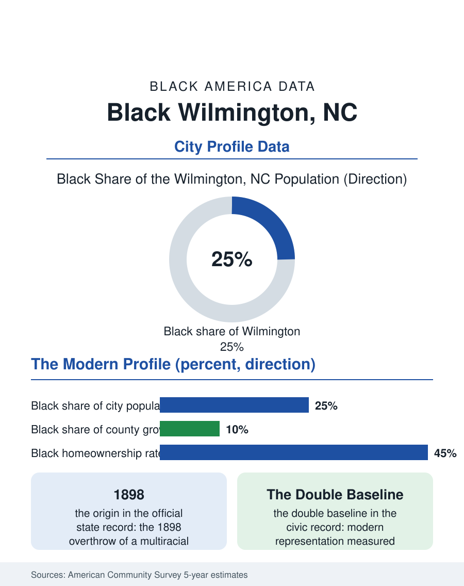

Black Cities
The Debt in the Data: Black Wilmington, North Carolina
Wilmington's Black community, a quarter of the city, carries the documented memory of 1898's overthrow and a century of walking back toward its own government. The Wilmington file.

Wilmington's Black community, roughly eighteen thousand people in a port city of about seventy thousand at the Cape Fear River's mouth, some twenty-five percent of the population, is one of the most historically significant in this atlas. Wilmington was, in 1898, the site of the only successful coup d'etat on American soil, the violent overthrow of a multiracial city government, an event whose demographic shadow the census has recorded ever since. This article reads the Wilmington file, where the data begin in catastrophe and continue into a complicated present.
The City That Was, and the Event That Unmade It
The historical record is not in dispute. In the 1890s Wilmington was North Carolina's largest city, with a Black majority or near-majority, a Black professional and business class of national note, Black officeholders, policemen, and aldermen in a Fusion government, and the state's only Black daily newspaper. In November 1898, a white supremacist campaign culminated in armed violence: the newspaper's offices burned, Black residents were killed in numbers never fully counted, and the elected government was overthrown at gunpoint and replaced, while thousands of Black Wilmingtonians, including much of the professional class, fled permanently. The census records the consequence in its coldest form: the Black share of the city's population, the business ownership, and the officeholding collapsed in a single intercensal decade and were rebuilt only partially across the following century. The community that remained and returned built the modern institutions, the churches of the north side, the Williston school tradition, whose alumni network is the city's Black civic treasury, and a political culture that carried the memory as instruction. The state's official acknowledgment, a state commission's report in the 2000s and the city's memorial, arrived a century late and stands in the record beside the numbers.
The Numbers at the River's Mouth
The American Community Survey's modern profile shows a community bifurcating along the region's growth. The Cape Fear coast is booming, retirement and remote-work migration pouring into the county, and the metro's Black population grows in absolute terms while declining as a share, the newcomers arriving overwhelmingly white and affluent in the county data. Within the city, the Black community's geography holds its historic form, the north side and east side neighborhoods carrying both the deepest institutions and the city's concentrated poverty, while Black suburbanization spreads into the county's new subdivisions in the pattern of the southern files. Median Black household income runs well below the county's surging median, homeownership trails the regional rate substantially, and the employment base, the port, the hospital system, the film studio economy that long made Wilmington a production town, the university at UNC Wilmington, sorts Black workers in the region's familiar pattern. The health and environment file has a specific local chapter: the industrial corridor along the river and the chemical contamination cases of the Cape Fear basin are documented public records in which the community's exposure is part of the evidence.
Memory as Civic Infrastructure
Wilmington's distinction in this atlas is that its central historical fact is now its central civic curriculum: the city teaches 1898 in its schools, marks it in its public spaces, and debates its reparative implications in its council chambers, a reckoning whose completeness is contested by the community's own historians and whose existence at all distinguishes the city from a hundred others with buried equivalents. The Black community's contemporary institutions draw on that curriculum directly: the Williston alumni, the north side churches, the cultural center movement, and a political representation that, while diminished from the 1890s peak that was destroyed, has re-entered the city's government in the modern era, a fact the community measures against both the present and the peak, an unusual double baseline. The forward file is the coast's: growth capital pressing on a historic Black geography, the gentrification arithmetic of every booming southern port, contested in Wilmington with an informed citizenry that knows, in documented detail, exactly what the loss of a Black city's ground has meant before. The Wilmington file closes where the river meets the sea, in the city where American democracy was once overthrown by force and where its Black citizens, having been expelled from their own government, spent a hundred and twenty-five years walking back toward it, census by census, until the counts again record a people a quarter of their city and rising in absolute number. Some files in this atlas are about populations. This one is about a debt the data have been keeping, in public, the whole time.
More in Black Cities
Black Atlanta: Population, Distribution, and Growth of a Black Metropolis
Metro Atlanta holds more than two million Black residents — roughly one in three, second only to New York. The suburban distribution, migration history, and composition of Black Atlanta in the census data.
Black New York: The Largest Black Population in America
The New York metropolitan area holds about 3.4 million Black residents — more than any metro in the nation — and the city itself about two million. The census profile.
Black Washington: The District and the Metro
The Washington metro holds about 1.6 million Black residents, and the District itself — long a majority-Black city — now records a Black share near 41 percent. The census profile.
Source: U.S. Census Bureau, American Community Survey 5-year estimates for Wilmington, NC; North Carolina 1898 Wilmington Race Riot Commission report.